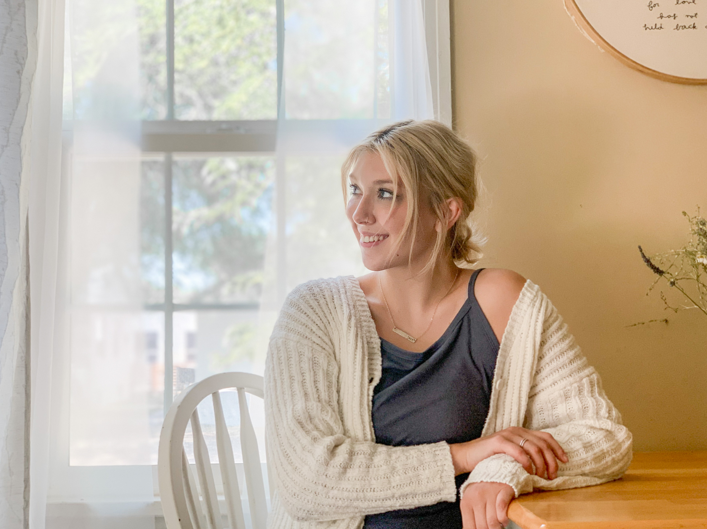

assignment 1: ABOUT ME
LAUREN BINNEY
| integrated media | strategic communication | graphic design | photography |
The best world shakers were the ones who understood the true power of words. They were the ones who could climb the highest.
-Markus Zusak

Hi! I'm Lauren! I am a student at Boise State University studying integrated media + strategic communication.
I am also earning a certificate in digital media from Boise State and a graphic design certification from the New York Institute of Art + Design.
I am a dedicated student with a passion for PR, digital media, + design. I believe in the power of visual
communication to make information accessible + understandable. I desire to work efficiently + creatively, always looking to improve in every aspect of my work.
On any given day, you might find me:
- hanging out in a coffee shop
- reading a good book
OR
- going on a long walk with friends.
The world has such beautiful things to offer, and I love incorporating that in my work, be it in relating to the people around me, capturing it in photos,
or accentuating people's passion in my designs.
MY FAVORITE THINGS + PEOPLE


CONTACT ME
(123) 456-7890
laurenbinney@u.boisestate.edu
view my portfolio